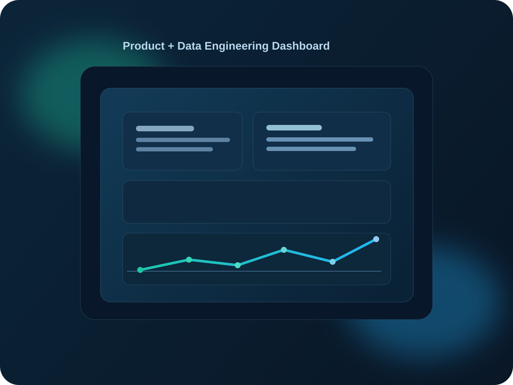
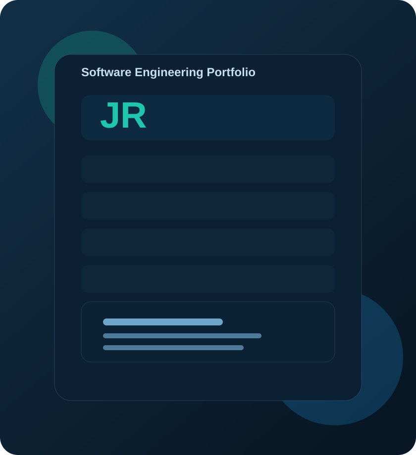
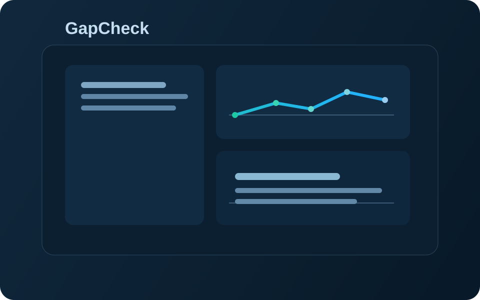
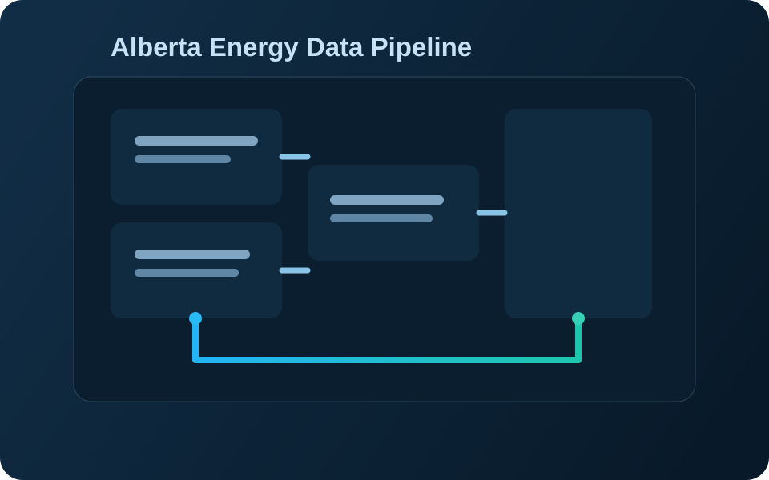
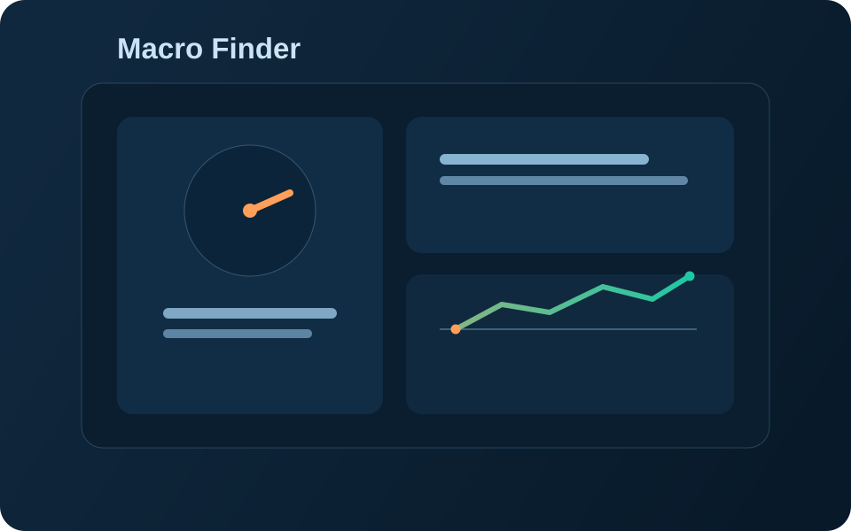
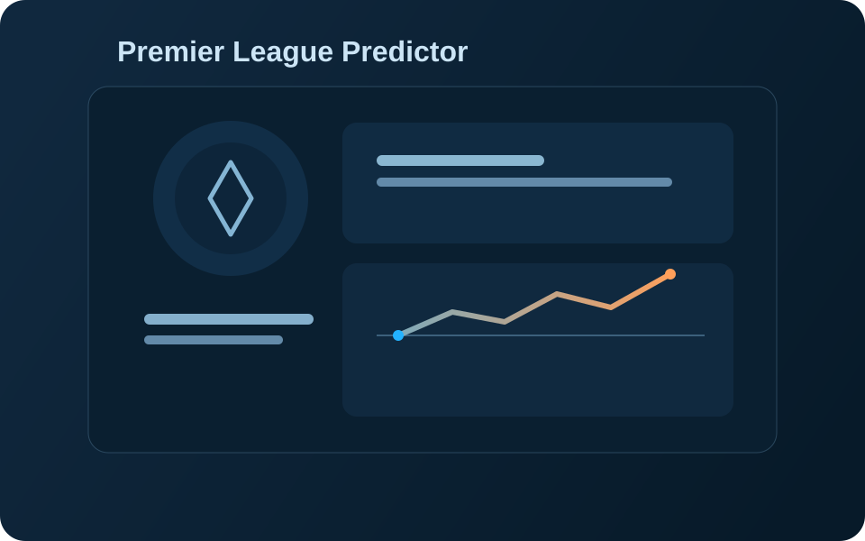

0
Records processed per ETL run
Software Engineering Student | University of Calgary
I build full-stack products and data pipelines that perform in production. I am targeting a Summer 2026 co-op in data engineering, analytics, or software development.
Focused on: Data Engineering

Built and shipped 3 full-stack web apps in real-world organizations.
Automated ETL processing for 500K+ records with validation and auditing.
0
Records processed per ETL run
0
Page-load performance improvement
0
AI outputs evaluated for quality
0
Match predictor model accuracy

About Me
I am a full-stack software engineering student focused on backend systems, data engineering, and AI-powered product experiences. I care deeply about architecture, quality, and clear business impact.
Across internships, contract work, and personal builds, I have delivered production apps, automated data workflows, and decision-support features that help users move faster with confidence.
Experience
Projects

React | FastAPI | PostgreSQL | Claude API | Airflow
AI-powered internship matching platform aggregating 100+ Calgary postings daily with de-duplication and candidate-job gap scoring.

Python | Airflow | PostgreSQL | Power BI | Docker
End-to-end ETL pipeline ingesting AER data at scale with automated validation, transformations, and analytics dashboards.

React | Node.js | PostgreSQL
Full-stack nutrition app that computes personalized macros and supports scalable meal tracking with a normalized relational schema.

Python | Scikit-learn | SQL
Machine learning pipeline for football match outcomes, engineered on noisy real-world data with optimized SQL feature extraction.
Technical Skills
Leadership
Leading a 100+ member student organization and coordinating executive teams to run 10+ cultural and community events annually.